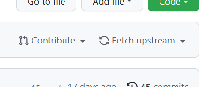

Step 1: To stage your changes, run git add ..
Step 2: run git commit -m "custom commit message about the changes you have made".
Step 3: run git push.
Step 4: Go to your forked GitHub repository (https://github.com/<YOUR-USERNAME>/weboverflow/).
Step 5: Click Contribute.
Step 6: Click Open pull request